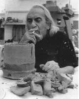

Peter
Voulkos touched clay, then he touched us. He journeyed
through life, and work, guided by his intuition, his past experiences,
and the curiosity to discover the next possibility. The 19th
century realists suggested that we are products of our heredity
and environment. Emile Zola proclaimed 'I am an artist. I am
here to live out loud' and Peter Voulkos did.
Voulkos lived a courageous life, he lived it with sincerity,
passion, integrity and respect. The magnitude of his accomplishments
and the revolutionary vision of his work will remain in the
museums and collections throughout the world and will be studied
by students indefinitely. No less important is the direct effect
he has had on those who were a part of his life, the way he
influenced them, and the accomplishments they have had and will
continue to have. Voulkos was the father of a movement that
is still in its infancy; it has only begun to be characterised.
Its history continues to unfold in the works and deeds of those
whom he inspired.
Since 1999, I have had the opportunity to work with Voulkos.
I assisted him in the construction of 16 major stacks, one of
which is more than 2.1 m (7 ft) tall. We also worked together
on numerous plates as well as a monumental ice bucket titled
Gaudi. Throughout this involvement, we were together for nearly
six months, from morning until night. I was with him during
his last days, and it is from this perspective that I write
about this legendary man and his creative process.
My first encounter with Peter Voulkos' work was in 1984. I
was delivering work for one of my teachers from the Kansas City
Art Institute, to a Chicago art gallery. On exhibit was a Voulkos
piece called Two Brick Stack. I slept next to it for three nights.
I traced every line, texture, movement and moment of that remarkable
piece. This was my first art experience; the first time I realised
the power of sculpture. I asked myself, What kind of man could
and would make this piece? Eighteen years later, and I am still
finding out.
I met Voulkos in his home in the early '90s, subsequently
firing three stacks and several plates in my Denver anagama,
meeting and corresponding occasionally. During this same period
of time, I was also fortunate to develop a friendship with another
artist, Jun Kaneko and, in late 1998 a phone call from Jun changed
my life. He called to tell me that he was inviting Peter Voulkos
to his Omaha, Nebraska, studio to make some new work and did
I know anyone that would be able to assist him. I immediately
answered yes me. I suggested that we do a workshop together
in Ohio, where I was teaching at Bowling Green State University,
in order to see if we would work well together. The Bowling
Green workshop took place in 1999 and the project in Omaha took
place the following summer at Kaneko's studio.
For me, the chain of events was magical. Everything fitted
together when we worked on a piece; we hardly needed to talk
about where the piece was going. Voulkos made all of the aesthetic
decisions and I tried to anticipate where he was headed. I wanted
to give him whatever support I could. All of the work that we
made together followed a similar procedure. We would throw a
number of parts on the wheel: plates, cylinders, thick bars
all raw materials for the fabrication process (a 'dance'
may be a more accurate description) that ensued.
I came to discover that Voulkos' creative process was quite
different than had been previously described by art historians.
For instance, writers have tended to overemphasise the aggressive
hack and slash, take no prisoners approach to his work. Violence
and machismo were not a part of what I saw in the work or the
man. When Voulkos touched the clay there was no ego, only courage.
His knowledge of the material was complete; he knew how to work
with and through it. I noticed that when we were working together,
it became a series of movements that took place through a kind
of protracted moment in time. It was a much slower dance than
one might guess. As Voulkos initially began to touch the clay,
he also began to improvise, responding to the moment, conscious
of the past but always moving forward. I cannot remember him
ever second-guessing himself he would move over every
area of the piece with care and vigilance, constantly tuned
in to what was happening with the clay. Over the course of a
work session, he would come to a point of saturation. It seemed
that the clay and his body always needed a break at the same
time.
After working, when his mind had time to digest it all, he
would begin to think about where the piece might go tomorrow.
Often, he would tell me in the morning over coffee that he had
been dreaming about the piece all night, saying ³I know
what I am going to do with that neck.² After a day of work
at Jun Kaneko's studio, we would go up to our apartment,
make a couple of Bloody Marys and watch the video of what we
had made that day. It was like he was a coach reviewing a game
film only much funnier. During the video he would see
things that he couldn't see while in the middle of making
the piece. It was fascinating to him (and to me) to see the
way the eye of the camera was able to capture different information
than he was, seeing it all at the same time.
Continue